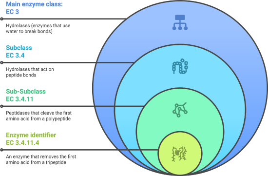

For more information
What are EC classifications?
The Enzyme Commission number (EC) is defined as a unique identifier
assigned to enzymes based on the International Union of Biochemistry's
classification rules helping to determine an enzyme's identity
(Enzyme Commission Number - an Overview, n.d.). An EC number has four levels.

Information on the Investigated Pathways
The pilot compares 12 human pathways selected from WikiPathways. They cover three metabolic areas:
- Carbohydrate and central energy metabolism — for example, glycolysis and pentose phosphate metabolism.
- Lipid metabolism — for example, fatty acid biosynthesis and beta-oxidation.
- Amino acid and redox metabolism — for example, tryptophan and glutathione metabolism.
Methodology
For each pathway pair, we first calculate gene overlap using Jaccard similarity: the number of shared genes divided by the total number of distinct genes across both lists.
We then remove the shared genes from both lists and compare the EC annotations of the remaining genes. The current pilot uses the first two parts of each EC number, such as 3.5. If either side has no usable EC annotations, we report “Not assessable” instead of 0%.